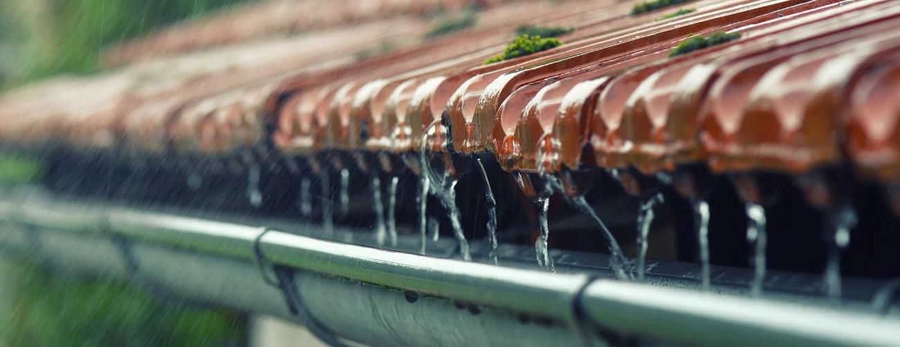
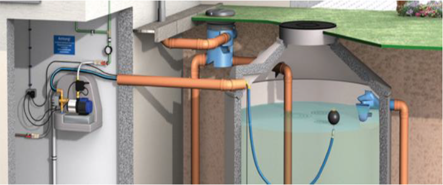
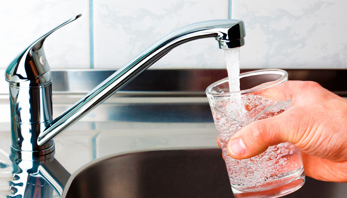

• Por que é importante?
A escassez de água vem sendo cada vez mais frequentes nos dias de hoje, estudos realizados pela ONU (Organização das nações unidas) prevê que em até 2050, dois terços da população terão impacto com essa escassez de água potável. Medidas precisam ser tomadas para amenizar o gasto individual. Uma alternativa que vem ganhando popularidade é utilizar o sistema de cisternas para o aproveitamento da água da chuva. Em São Paulo, cidadãos começaram o movimento "Cisterna Já", como alternativa emergencial à momentos de crise
hídrica. O movimento procura promover a capacitação para aqueles que queiram fazer a captação e aproveitamento da água da chuva dessa forma ajudando aqueles que sofrem com o impacto da falta d’água.

• O que é uma cisterna?
A cisterna é um reservatório que fica em um ponto qualquer no exterior da residência, um reservatório que armazena a água da chuva para uso doméstico, ou seja, é um sistema de aproveitamento da água de baixo custo. O uso de cisternas é o mais procurado e indicado quando o assunto é aproveitamento com o intuito de economizar água.

• Como funciona?
A água da chuva é levada através da calha diretamente para um filtro que, por sua vez irá eliminar qualquer tipo de impureza que essa água contenha, tirando qualquer tipo de pedaços de folhas ou galhos. Como há riscos de ficar vestígios de impurezas no fundo, existe um componente que se chama freio d’agua, que tem como objetivo agitar a água para que a maioria dessas partículas solidas sejam suspensas. As cisternas de maior porte, geralmente são enterradas para evitar a incidência de luz solar, prevenindo a proliferação de algas e outro micro-organismos. Entretanto, existem modelos de cisternas que não necessitam de ser enterradas, diminuindo o custo da instalação, já que não exigem obras.
• A água da chuva é potável?
A água obtida da chuva não é potável, pois pode conter desde partículas de poeira e fuligem, até sulfato, amônio e nitrato, portanto a água da chuva não é adequada para o consumo humano. É necessário ter atenção ao instalar o encanamento da cisterna deixando-o distante de qualquer tipo de torneira que seja voltado para o consumo humano (beber). É muito importante e necessário que seja feita a instalação de filtro na cisterna, para evitar o risco de contaminação.

• Como posso utilizar a água da chuva?
A água da chuva pode ser utilizada para diversos tipos de atividades domesticas, que possuem um alto nível de consumo, como lavar o carro, sanitário ou calçada.
Vantagens:
Desvantagens:
• Outros cuidados a se tomar
De acordo com o SIAS, não recolha as primeiras águas da chuva, pois podem conter sujeiras que já estavam no telhado/ calha. Ou se caso preferir/ achar melhor, poderá também fazer a limpeza das calhas antes da instalação de sua cisterna residencial, tirando folhas e sujeiras com a mão e logo em seguida lavar a calha com água, sabão e para obter um melhor resultado a água sanitária é uma boa opção, com atenção especial no caminho entre a calha e a cisterna.
• Onde encontro esse tipo de serviço?
Se você deseja instalar uma cisterna, existem algumas opções, e a escolha irá
variar de acordo com suas necessidades. Você pode optar por modelos de
alvenaria que demandam uma obra civil (mas têm grande capacidade),
modelos pré fabricados (mas que ta mbém precisam de obras por necessitarem
ser enterrados), modelos externos e menores que dispen sam qualquer tipo de
obra no local.
Se você estiver procurando por opções mais baratas e que não necessitem de
grandes obras, as cisterna s de poliet ileno são resistente s e são boas opções.
Elas possuem uma instalação simples, já que são compactas e não precisam
ser enterradas, o que diminui os custos de instalação. As
marcas Casológica e Tecnotri oferecem opções vantajosas
• Qual é o preço médio
Os preços variam entre 1.279,00 R$ à 1 732,00 R$R$, que são de capacidademáxima de 600 l itros à 1.000 litros.


Reaproveite - Copyright © 2020.